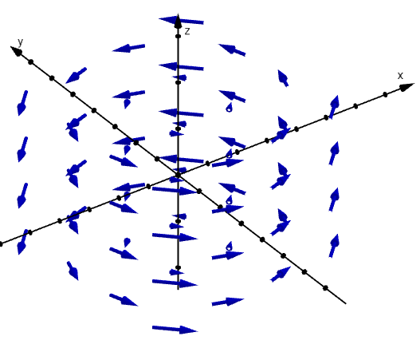

Vector Fields, Divergence, and Curl
Below are Maxwell’s equations, the laws of electromagnetism. They are written in a symbolic language that looks mysterious to most people, but now that you have taken Calculus III, you are ready to understand the mathematics behind them. Here we learn about vector fields and how to calculate divergence and curl. Since you already know about vectors and partial derivatives, you have the tools to understand many of the calculations in these equations.
To be clear, we are not learning the physics behind Maxwell’s equations. That is beyond the scope of Calculus III. I simply want to show you that the mathematics you have learned is powerful enough to understand some of the most important equations in physics.
The most interesting one to me is the second equation. We cannot get into the details, but it says there are no magnetic monopoles. A monopole would be a particle that carries only a north or only a south pole, unlike electric charges such as electrons and protons. The search for magnetic monopoles is a big deal in physics, and none has ever been found, just as Maxwell’s second equation says.
Suppose \(P\), \(Q\), and \(R\) are functions of \(x\), \(y\), \(z\), and \(t\). A vector field \(\mathbf{F}\) assigns a vector to each point \((x, y, z)\) in space, at each moment in time \(t\).

An example is an electric force field, where each point in space has a force vector acting on a charged particle. Another is the velocity field of a fluid, where \(\mathbf{F}(x, y, z, t)\) gives the direction and speed of the water at each location and at each moment in time.
Since we have several notations for vectors, we also have several notations for vector fields. The vector field above can also be written in angle bracket notation, with arrows or in bold.
An Example
The vector field below represents the force exerted on an object at each point in space and time. Find the force on an object at the point \((2, 5, 8)\) at the moment when \(t = 2\).
Given the vector field \(\mathbf{F} = P\,\mathbf{i} + Q\,\mathbf{j} + R\,\mathbf{k}\), the divergence of \(\mathbf{F}\) is defined below. The divergence is a scalar.
Divergence
An Example
Find the divergence of the vector field below.
Another Example
For any magnetic field \(\mathbf{B}\), Maxwell’s second equation states that the divergence is always zero: \(\nabla \dotp \mathbf{B} = 0\). Verify this is true for the field below.
The divergence is zero, as Maxwell’s second equation says.
Given the vector field \(\mathbf{F} = P\,\mathbf{i} + Q\,\mathbf{j} + R\,\mathbf{k}\), the curl of \(\mathbf{F}\) is defined below. The curl is a vector.
Curl
This can also be written as the determinant below.
An Example
Find the curl of the vector field below.
An Example
Assume the fields below.
- Find the curl of \(\mathbf{E}\).
- Find \(-\dfrac{\partial \mathbf{B}}{\partial t}\), the negative time derivative of \(\mathbf{B}\).
- I made this problem to help you understand the mathematics in Maxwell’s third equation, sometimes called Faraday’s Law: \(\nabla \times \mathbf{E} = -\dfrac{\partial \mathbf{B}}{\partial t}\). Compare your results from parts (a) and (b).
Part (a): Here \(P = 4z\), \(Q = -3x^2\), and \(R = 11y^2\).
Part (b)
Part (c): Parts (a) and (b) give the same vector, \(\langle 22y, 4, -6x \rangle\), so these fields satisfy Faraday’s Law.